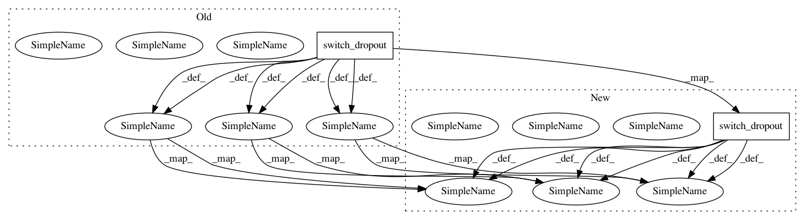

cc4a397586c6dc8c2de95773572bf3ab318a8371,texar/core/layers.py,,get_rnn_cell,#,127
Before Change
vr_kwargs = {"variational_recurrent": True,
"input_size": d_hp["input_size"][layer_i],
"dtype": tf.float32}
cell = rnn.DropoutWrapper(
cell=cell,
input_keep_prob=utils.switch_dropout(d_hp["input_keep_prob"]),
output_keep_prob=utils.switch_dropout(d_hp["output_keep_prob"]),
state_keep_prob=utils.switch_dropout(d_hp["state_keep_prob"]),
**vr_kwargs)
// Optionally add residual and highway connections
if layer_i > 0:
if hparams["residual"]:
cell = rnn.ResidualWrapper(cell)
if hparams["highway"]:
cell = rnn.HighwayWrapper(cell)
cells.append(cell)
After Change
mode)
output_keep_prob = utils.switch_dropout(d_hp["output_keep_prob"],
mode)
state_keep_prob = utils.switch_dropout(d_hp["state_keep_prob"],
mode)
cell = rnn.DropoutWrapper(
cell=cell,
input_keep_prob=input_keep_prob,
output_keep_prob=output_keep_prob,
state_keep_prob=state_keep_prob,
**vr_kwargs)
// Optionally add residual and highway connections
if layer_i > 0:
if hparams["residual"]:
cell = rnn.ResidualWrapper(cell)
if hparams["highway"]:
cell = rnn.HighwayWrapper(cell)
cells.append(cell)
In pattern: SUPERPATTERN
Frequency: 3
Non-data size: 2
Instances
Project Name: asyml/texar
Commit Name: cc4a397586c6dc8c2de95773572bf3ab318a8371
Time: 2018-03-23
Author: zhitinghu@gmail.com
File Name: texar/core/layers.py
Class Name:
Method Name: get_rnn_cell